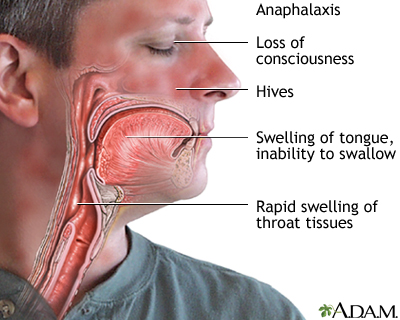

First Aid
Statistics show that nearly 59% of people would not feel confident enough to try to save a life and 24% would do nothing and wait for an ambulance to arrive. That is why first aid is a really important set of skills to have, because knowing how to properly provide first aid can save someone’s life. Simply by knowing how to provide first aid properly, 2,500 lives could have been saved each year.To carry out a chest compression: 1. Place the heel of your hand on the breastbone at the centre of the person’s chest. Place your other hand on top of your first hand and interlock your fingers. 2. Position yourself with your shoulders above your hands. 3. Using your body weight (not just your arms), press straight down by 5–6cm on their chest. 4. Repeat this until an ambulance arrives. Try to perform chest compressions at 100-120 chest compressions a minute.
For more information visit Source: http://www.nhs.uk/Conditions/Accidents-and-first-aid/Pages/CPR.aspx
Allergic reaction can happen when a person is sting by an insect or have eaten certain foods. It can happen within second or minutes after a contact with something that caused the allergic reaction.
It may be difficult to breathe and their throat and tongue may be swollen. Check if the person carries any medication with them and if you are trained, give the medication to them, if not then try to help administer their medication. Also make sure they are sitting upright (if they are conscious), since it is the best position to breathe properly while having an allergic reaction.
Source: http://www.nhs.uk/Conditions/Accidents-and-first-aid/Pages/Introduction.aspx#anaphylaxi
In the event of burn or scald:
- Cool the burn as quickly as possible with cold running water for minimum of 10 minutes.
- Remove any clothing or jewellery, unless it is attached to the skin.
- Cover the burn lengthways with strip of cling film or clean plastic bag. If none of these items are available, use a sterile dressing or non-fluffy material. Do not wrap the burn as it may lead to further injury.
- Do not put creams, lotions and or sprays on the burn.
- Treat the pain from a burn with paracetamol or ibuprofen
Source: http://www.nhs.uk/Conditions/Burns-and-scalds/Pages/Treatment.aspx http://www.nhs.uk/Conditions/Accidents-and-first-aid/Pages/Introduction.aspx#burns
If someone has severe bleeding, the main aim is to prevent or stop the loss of blood immediately. Remember to use gloves if possible to reduce the risk of any infection.
If there is something embedded in the wound, try not to press on the object and press firmly on either side of the object and build up padding around it before bandaging to prevent putting pressure on the object itself.
If nothing is embedded:
- Apply and maintain pressure to the wound
- Use clean dressing to bandage the wound
- If the wound is located on the limb and there are no fractures, raise the limb to decrease the flow of blood.
- If bleeding continues through the bandage or pad, try to apply another bandage or pad over it.
Source: http://www.nhs.uk/Conditions/Accidents-and-first-aid/Pages/Introduction.aspx#bleeding
If the airway is only partly blocked, the person will probably be able to speak, cry, cough or breathe.
To help the person try to:
- Encourage the person to cough to try to clear the airway.
- Do not put objects or fingers into the person’s throat
If the airway is severely blocked and the person is struggling to breathe, give up to five back blows using the heel of your hand. If it does not help, follow these steps below:
- Stand behind the person who is choking.
- Place your arms around their waist and bend them well forward.
- Clench one fist and place it just above the person's belly button and below the breastbone.
- Place your other hand on top, then pull sharply inwards and upwards.
- Repeat this up to five times until the object stuck in their throat comes out of their mouth.
Source: http://www.nhs.uk/Conditions/Accidents-and-first-aid/Pages/Introduction.aspx#choking
Heart attack
If you think a person is having a heart attack, or has had a heart attack, make them as comfortable as possible and call for an ambulance as soon as possible.
Symptoms of heart attack:
Chest pain (usually located in the centre of the chest)
Pain in other parts of the body
Try to sit the person down. If they are conscious give them a 300 mg aspirin tablet to chew slowly. If the person becomes unconscious open their airway, check their breathing and if necessary start CPR
Source: http://www.nhs.uk/Conditions/Accidents-and-first-aid/Pages/Introduction.aspx#heart For more information: http://www.nhs.uk/Conditions/Heart-attack/Pages/Introduction.aspx
Stroke
The FAST guide can help you to remember when dealing with people who had a stroke.
- Facial weakness: is the person unable to smile evenly, or are their eyes or mouth droopy?
- Arm weakness: is the person only able to raise one arm?
- Speech problems: is the person unable to speak clearly or understand you?
- Time to call 999 or 112 for emergency help if a person has any of these symptoms.
For more information visit: http://www.nhs.uk/Conditions/Stroke/Pages/Symptoms.aspx Source: http://www.nhs.uk/Conditions/Accidents-and-first-aid/Pages/Introduction.aspx#stroke